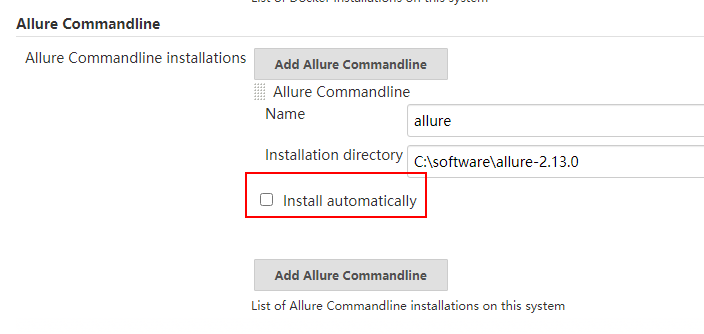
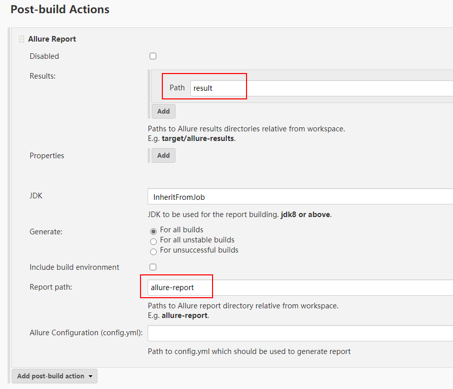
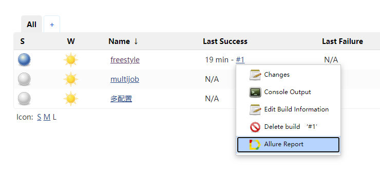

RobotFramework+Jenkins初次启动Jenkins安装Jenkins配置Jenkins管理节点Launch methodLaunch slave via execution of command on the Master Launch agent by connecting it to master创建projectfreestyle project多配置项目multijob project执行project与robot framework集成robot 插件jenkins-multijob-plugin 插件publish-over-ssh 插件allure-jenkins-plugin 插件allure框架的使用allure与Jenkins的继承在allure的测试报告中显示截图mailer-plugin 插件Subversion 插件执行机目录规划Jenkins project规划
使用tomcat+Jenkins.war的形式安装，环境使用Ubuntu。
首先下载Oracle JDK的二进制包，解压后移动到/opt目录（不要将移动到/opt目录下的文件或目录的所有者变成root，这样以后修改文件会很麻烦的），在~/.bashrc中添加环境变量
1export JAVA_HOME=/opt/jdk-132export PATH=${JAVA_HOME}/bin:${PATH}
为了避免可能的兼容性问题，不要去使用openJDK。使用二进制包而不是deb包，是为了方便，解压即可，也没什么依赖问题。
解压tomcat二进制包到/opt目录，并将Jenkins.war放到tomcat/webapps目录下。需要安装sudo apt install fontconfig，否则运行Jenkins会报错，java.lang.NullPointerException at sun.awt.FontConfiguration.getVersion。
运行tomcat/bin/startup.sh启动Jenkins。
首次打开Jenkins网页前要断网，因为它会检查一些推荐的插件，但是插件网站被墙了，所以检查的时间非常慢。断网后选择跳过安装推荐的插件，然后进入Jenkins中，在 manage Jenkins -> manage plugin -> advanced 中，将update site修改为https://mirrors.tuna.tsinghua.edu.cn/jenkins/updates/update-center.json。可惜这只能加速插件列表的读取速度，插件的下载速度依旧很慢。
无法下载插件的话，可以在http://updates.jenkins-ci.org/download/plugins/中手动下载插件安装包，然后在 manage Jenkins -> manage plugin 中上传并安装。
在 manage Jenkins -> configure system -> Jenkins URL 中设置URL，使用实际的IP或域名代替localhost，比如http://192.168.1.128:8080/jenkins/
Jenkins对中文支持不好，界面也不能做到完全汉化，所以不管时Jenkins的界面，还是上面的配置，能用英文就用英文。
运行Jenkins服务的机器叫做master，连接到master并执行任务的机器叫做agent，不管是master还是agent都是node，都可以执行任务。
安装完Jenkins后就会有一台执行机（就是master），然后根据需要添加跟多的执行机。manage Jenkins -> manage nodes -> new node，创建agent时有如下配置需要注意
| 菜单 | 说明 |
|---|---|
| # of executors | node上能并发执行的任务数量 |
| Remote root directory | node上Jenkins的主目录，master的是～/.jenkins |
| Labels | 多个label用空格分隔 |
| Launch method | agent的启动方式 |
| Environment variables | 如果node中有同名的环境变量，则替换它 |
在master上使用ssh或其他什么的命令连接agent，然后启动agent上的agent.jar使得agent连接master，或者使用docker在master上再起一个agent。一般不会直接写一个命令，而是在master上写一个脚本，然后Jenkins执行这个脚本，优点是当agent特别多的时候，可以使用master上的脚本统一管理，缺点是脚本要自己写。
要使用该连接方式需要先开启 manage Jenkins -> Configure Global Security -> TCP port for inbound agents，选择random。在agent protocols中勾选Inbound TCP Agent Protocol/3 (deprecated, basic encryption)
这种方式是手动在agent上启动agent.jar来连接master，它默认会在remote root directory/remoting 中保存一些缓存和log。
| 菜单 | 说明 |
|---|---|
| Discard old builds | 多久之前的执行结果会被丢弃 |
| This project is parameterized | 设置project执行的一些参数，每次执行project时都需要用户手动输入这些参数的值，即使原先已经设置了默认值。该功能适用于手动执行project的情况 |
| Execute concurrent builds if necessary | 多次触发同一个project的build，这些build会排队执行，勾选该选项后，只要有空闲的agent，就能并发build同一个project |
| Restrict where this project can be run | 指定该project能跑在哪个agent上，指定的方式是label |
| general->advanced->Use custom workspace | 指定project的work directory，默认是root directory/workspace/<project name> |
| Build after other projects are built | 多个project串联build时可以用 |
| Build periodically | 周期任务，语法同Linux的crontab |
| add build step | 最简单的比如Linux shell或Windows批处理命令，此处可以使用系统变量或者是Jenkins中设置的环境变量和参数 |
| add prost-build action | 其中的build other projects和前面的Build after other projects are built是一对 |
比如在build中添加的执行步骤是一个shell命令，该命令接受一个参数，我现在希望该参数的值传入1，跑一次项目，然后再传入2，跑一次项目，那就可以使用这个多配置项目。
多配置项目会将不同的参数组合，在某一个可用的节点上都跑一次，如果该执行机上有多个 executor，则并发执行，也可手动设置为顺序执行。
还可以勾选多个节点，让同一个项目在多个节点上并发执行。那如果我既配置了参数，又勾选了多个节点呢？那就在每个节点上，把多种参数的项目都跑一边，即一个节点需要跑多个项目。
多配置项目的执行效果是，在某个节点上执行多配置项目，build之前的配置，比如Source Code Management，都跑在该节点上，之后如果有多个节点要build，则在这些节点上触发build和Post-build Actions。
所以如果希望每个节点在build之前先拉去代码，则不能使用多配置项目中的Source Code Management，可以在build中使用命令行。
只有build会占用executors，如果多配置项目在master上执行，它不会占用master中的executors，除非它在master上触发了build。
自由的串联并联执行多个已经存在的project。
参数：project中可以配置参数，另外在node中可以配置node级别的环境变量，在configure system中可以配置全局的环境变量。
执行：roject的build会被分配到指定label的空闲node上，同一个project只会在一个node上build一次。
在Jenkins中展示测试报告。
在需要的project中的post-build actions中添加publish robot framework test result。
该插件以来几个可选的插件，虽说是【可选】，但必须要安装，否则该插件不能用。
插件的依赖关系在https://plugins.jenkins.io/中可以查到。
打开robot的测试报告可能会遇到opening robot framework log failed。
不要自定义RF输出的log或xml文件的名字，虽然robot插件可以为这些文件指定自定义的名字，也可以顺利获取到这些文件，但却不能展示到Jenkins的页面中，这是一个bug。
串联并联build多个project。
可以在build或Post-build Actions阶段，将文件上传到FTP服务器，但是不能将FTP服务器中的文件下载到本地。
在project的build > Send files over FTP > advanced中勾选Flatten files，只上传文件，不创建目录；勾选Clean remote，上传之前先清空FTP上远程目录中的文件。
Allure Report是一个测试报告框架，和robot framework、Jenkins等都能集成，用处就是生成好看的测试报告。
Allure Framework在各平台的安装方式见官方文档，allure与RF的继承方式是安装python模块pip install allure-robotframework。
使用方式是robot --listener allure_robotframework ./my_robot_test，allure会在cmd的当前目录中生成output/allure文件夹，用来存放输出的文件。robot自己的output文件也还是会输出，除非手动禁止。robot --listener allure_robotframework;/set/your/path/here ./my_robot_test这样可以指定allure文件的输出目录。
现在allure只是生成了数据文件，并不是测试报告，生成测试报告需要使用：allure generate <数据文件所在目录，多个目录就可以合并多个结果> -c -o <测试报告输出的目录>：-c 表示在输出测试报告前先清空测试报告的目录。allure open <测试报告输出的目录>：启动一个http服务，打开浏览器，使用这个http服务查看测试报告。allure生成的测试报告不能直接在本地查看，要用到http服务。allure serve <数据文件所在目录>：这是前两个命令的组合，它会在系统的临时目录中生成测试报告，并启动http服务，然后用浏览器打开测试报告。
在Jenkins中安装allure-jenkins-plugin后，在Jenkins的global tool configuration的Allure Commandline中配置：

【name】随意，不要勾选【Install automatically】，因为我前面已经安装了allure了。
在project的post-build actions中添加：

【results】指的是allure输出的数据文件，这个路径是需要手动配置的，它是project的workspace下的相对路径。
【repot path】是测试报告的生成路径，默认值是allure-report，即默认allure-jenkins-plugin会自动在project的workspace下allure-report中生成测试报告。点击此处可查看测试报告

截图的显示，尤其是当allure与Jenkins集成时，需要自己写一个截屏函数。在PageObject中添加一个函数：
x
148151from robot.api import logger23# 这个作为PageObject类的一个方法4def screenshot_for_allure(self):5 # python中的一种写法，这些模块只在该方法中使用，那我就只在该方法中导入6 # 该方法执行完毕后，这些导入的模块也就失效了，不能再被使用7 from allure import attach8 from allure_commons.types import AttachmentType9 # 截屏代码参考seleniumlibrary，主要修改两点：10 # 1 截屏路径直接写死，seleniumlibrary的生成截屏路径的方法没那么容易被调用，而且截图最终被复制到allure中，这个截屏路径只是个临时存放地点，写死即可11 # 2 修改打印的log，原来是用log在report中插入HTML代码来展示截屏，修改为只打印截图的名字。12 # 因为allure添加附件时设置的名字时附件在html页面中展示的名字，而不是真实的文件名，真实的文件名是自动生成的。故我不能在report中插入html代码，让其指向真实的文件地址。只能打印个名字，让用户自己去找。13 if not self.selib._drivers.current:14 logger.info('Cannot capture screenshot because no browser is open.')15 return16 png_name=str(int(time()))+'.png'17 png_path=SCREENSHOT_DIR+'\\'+png_name18 if not self.selib.driver.save_screenshot(png_path):19 raise RuntimeError("Failed to save screenshot '{}'.".format(png_path))20 21 attach.file(png_path, name=png_name, attachment_type=AttachmentType.PNG)22 logger.info('<screenshot_for_allure> '+png_name)
代码拉取后会放在project的workspace中，如果希望多个project使用同一套代码，则需要为多个project配置Use custom workspace
| Jenkins目录 | 作用 | 说明 |
|---|---|---|
| D:\jenkins | 作为Remote root directory | 每台执行机都要创建D盘，且D盘是最有一个分区，方便空间不够时扩容 |
| D:\jenkins\remoting | Jenkins存储log等文件 | Jenkins自动创建 |
| D:\jenkins\workspace | 每个project默认都会在该目录下创建自己的工作目录 | Jenkins自动创建 |
| D:\jenkins\project | 代码、测试数据、测试资源等 | 即所有需要上传到版本库中的文件 |
| D:\jenkins\project\autoIt | autoIt脚本和编译后的exe | |
| D:\jenkins\project\robot | robot工程代码 | 用pycharm打开的就是这个目录 |
| D:\jenkins\tmp | 需要下载的待测试软件的安装升级包，或者其他临时数据 | |
| D:\jenkins\tool | 和测试用例无关，但是会用到的绿色软件或脚本，比如下载安装包用的curl |
D:\jenkins\project\robot 该目录结构同《RobotFramework工程结构》，但还需要加几个文件。
D:\jenkins\project\robot\args\：存放robot -A参数需要的argumentfile。D:\jenkins\project\robot\node_vars.py：《RobotFramework工程结构》中的project_vars.py是robot -V参数需要的variablefile，但是因为每个节点都需要一些自定义的变量，所以再加一个node_vars.py，它form project_vars.py import *，并给一些需要自定义的变量重新赋值。
依据实际项目而定，这里不再记录。只说几个要点。